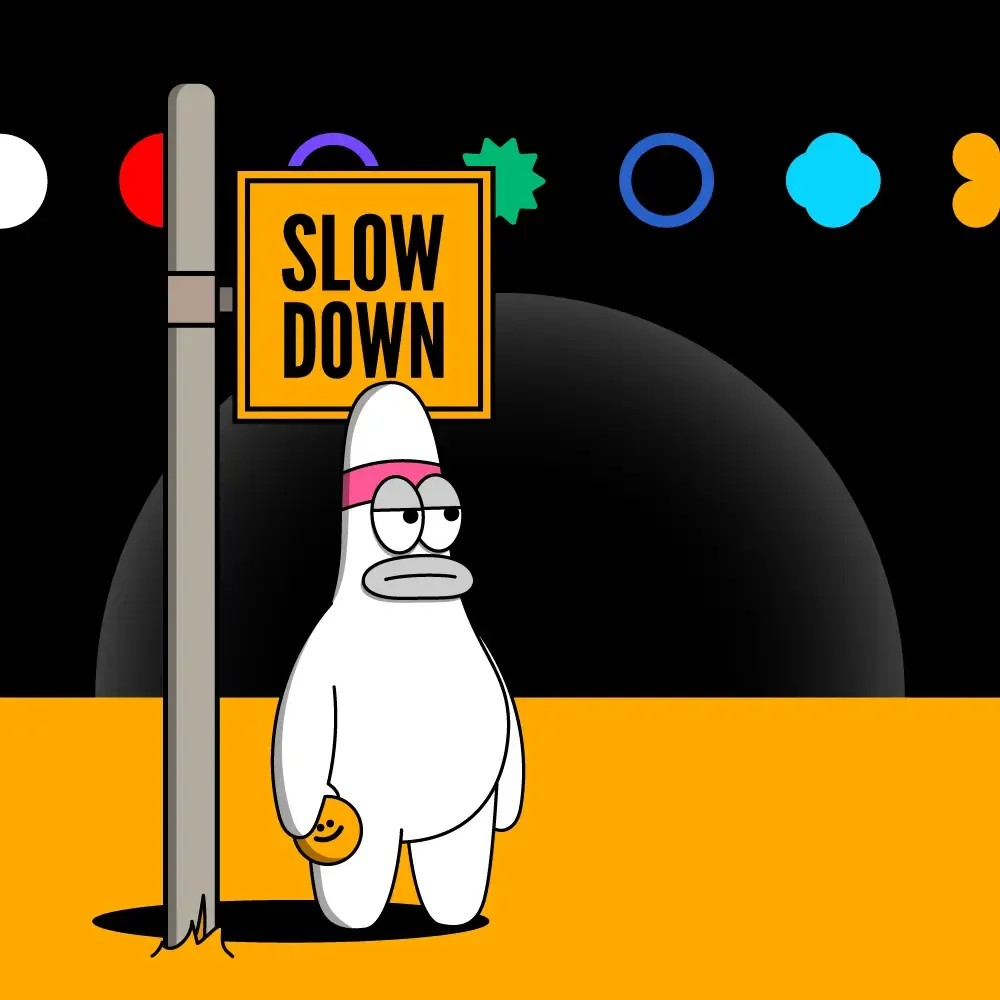

Seorang pemuda kreatif yang passionate di dunia teknologi dan editing. Belajar secara autodidak dan selalu ingin berkembang.

Pengalaman bekerja kurang lebih 6 tahun 1 tahun di rumah makan , 2 tahun di pabrik polywood dan 3 tahun di coffeshop Bahkan di sisa-sisa waktu luang saya mengasah skill/keahlian
Suka bereksperimen dengan desain, warna, dan estetika digital. Belajar dari PixelLab,canva,VN editor hingga PicsArt .
Mulai perjalanan coding dari HTML & CSS — mempelajari cara membangun tampilan web yang indah dan fungsional.
Percaya bahwa belajar mandiri adalah skill tersendiri. Selalu ingin tahu dan tidak takut mengeksplorasi hal-hal baru.
Senang menganalisis, riset, dan menggali informasi secara mendalam sebelum membuat keputusan atau karya.
Sebagai pengantar makanan dan minuman hingga membuat coffe
bekerja di bidang pembuatan kayu lapis polywood di bagian Glue Spreader -/+ 6bulan sebagai staff Kemudian naik jabatan menjadi kepala kerja ,mengelola absen kehadiran staff dan menjalankan produksi sesuai arahan dari pengawas
Perjalanan belajar yang masih terus berkembang — setiap hari selalu ada hal baru yang dipelajari.
Terbuka untuk kolaborasi, diskusi, atau sekadar ngobrol soal tech & design.
{kind=link}